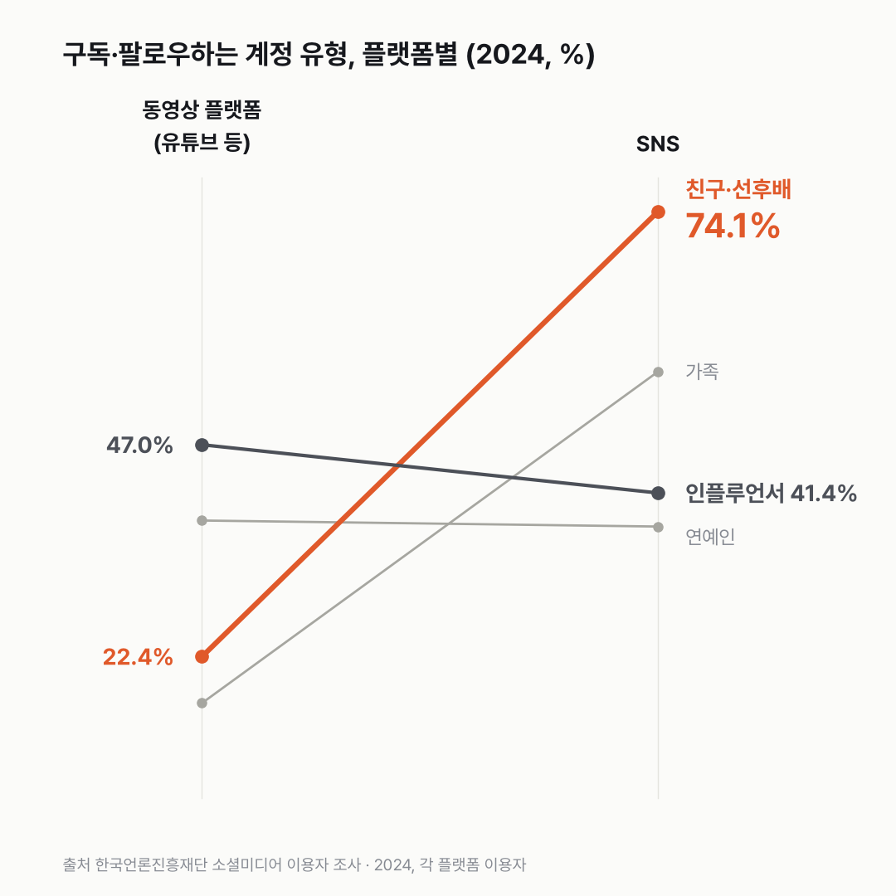

유튜브에선 크리에이터를, SNS에선 친구를 따라요
비슷한 버튼을 눌러도 유튜브에선 모르는 크리에이터를, SNS에선 아는 사람을 따라가요. 두 앱에서 찾는 게 서로 다른 걸까요?

3줄 요약
- 동영상 플랫폼 이용자의 47.0%가 인플루언서·크리에이터를 구독해요. 유형 중 가장 많아요.
- SNS 이용자는 74.1%가 친구·선후배를 팔로우해요. 동영상 플랫폼에선 22.4%예요.
- 20대부터 60대까지, 동영상 플랫폼에선 연예인보다 인플루언서를 구독하는 사람이 많아요.
구독 목록을 열면 채널 이름이 줄줄이 이어져요. 그런데 이 목록이 아예 빈 사람도 동영상 플랫폼 이용자의 32.2%였어요. 구독이 있는 쪽에선 인플루언서·블로거·전문 크리에이터가 가장 많고, 연예인·운동선수(38.2%)가 그다음이에요. 친구·선후배는 그보다 한참 아래예요.
SNS 표로 넘어가니 생각했던 순서와 달랐어요. 맨 위가 친구·선후배, 74.1%예요. 가족 55.5%, 직장 동료 45.2%가 뒤를 잇고, 인플루언서는 41.4%로 네 번째예요. 동영상 플랫폼에서 1위였던 유형이 여기선 아는 사람들 뒤로 밀려나 있었어요.

나이로 나누면 기울기가 보여요. 동영상 플랫폼에서 인플루언서를 구독하는 사람은 20대 60.0%, 60대 34.4%예요. 연예인은 20대 52.7%, 60대 22.2%. 20대에서도 60대에서도 인플루언서 쪽이 높았어요.
아무것도 구독하지 않는 사람은 나이가 많을수록 늘어요. 20대 18.4%, 60대 46.3%. 70세 이상은 62.0%까지 올라가요. 물론 70세 이상은 응답자가 95명이라 크기는 흔들릴 수 있어요.

구독 버튼이든 팔로우 버튼이든 누르는 손은 같아요. 한쪽에선 볼거리를, 한쪽에선 사람을 고르는 걸까요? 그 계정을 얼마나 자주 들여다보는지는 이 표에 없었어요.
이 숫자는 어디서 왔나요
출처
어떻게 셌나요
- 만 19세 이상 3,000명을 집으로 찾아가 면접한 조사예요(2024년 10~11월).
- 비율은 각 플랫폼을 쓰는 사람 가운데서 셌어요. 동영상 플랫폼은 2,549명, SNS는 1,813명이에요.
- 여러 유형을 함께 고를 수 있어서(중복응답) 합이 100%를 넘어요.
- 대표 차트는 두 표의 '전체' 값을 양쪽에 놓고 이은 거예요. 왼쪽과 오른쪽은 분모가 다른 두 집단이에요. 같은 사람이 어떻게 바뀌었는지 보여 주는 선은 아니에요.
- SNS 70세 이상은 응답자가 11명뿐이라 쓰지 않았어요.
한계 3가지
이 데이터로 말할 수 없는 것
- '구독·팔로우하고 있다' 비율이에요. 얼마나 자주 보는지, 돈을 쓰는지는 알 수 없어요. 누가 인플루언서인지는 응답자 판단이에요.
- 2024년 한 해라 늘었는지 줄었는지 말할 수 없어요. 특정 채널·인물 이야기는 하지 않아요.
- 주로 쓰는 SNS는 주로 쓰는 SNS 글, 직접 채널을 운영하는 사람은 채널 운영 글, 크리에이터 수입은 크리에이터 수익 글에서 다뤘어요.
새 글 나오면 받아 보기
피드 리더 앱에 이 사이트 주소를 한 번 넣어 두면, 새 글이 올라올 때 앱에 떠요. 가입이나 메일 주소는 필요 없어요.
받는 법 보기
- 피드 리더 앱을 하나 골라요. 새 글을 모아 보여 주는 앱이에요. 예를 들면 Feedly나 Inoreader가 있어요. 둘 다 무료고 웹·휴대폰에서 써요.
- 앱에서 '구독 추가'(+)를 누르고 아래 주소를 붙여 넣어요.
- 끝이에요. 새 글이 올라오면 앱 목록에 떠요.
https://protofu.github.io/opendata-insight/feed.xmlFeedly를 쓴다면 여기를 눌러 바로 추가할 수도 있어요.